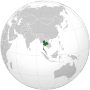

De: La Frikipedia, la enciclopedia extremadamente seria.
De: La Frikipedia, la enciclopedia extremadamente seria. De: La Frikipedia, la enciclopedia extremadamente seria.

|
FRIKIPEDIA QUIERE QUE ESTA DEFINICIÓN
PASE A SER UN ARTÍCULO FRIKIPÉDICO La información contenida en este artículo es una mínima parte de su jugo total, así que ponte los guantes, saca el tupperwere y empieza a exprimir el tema. Si lo haces serás recompensado con una galleta en almíbar y algo más. |
| De la serie Países del planeta tierra: | |||||
| Tailandia | |||||
|---|---|---|---|---|---|
| |||||
| Lema: Pokemon es una mierda , viva digimon | |||||
| Himno: El opening de Digimon Adventure
| |||||
| 
| |||||
| Capital | Bangkok | ||||
| Mayor ciudad | Bangkok | ||||
| Lenguas oficiales | Tailandes y Japones | ||||
| Gobierno | Monarquía constitucional | ||||
| Lider Supremo | Taichi Yagami | ||||
| Área | | ||||
| Población | | ||||
| Moneda | Digidolar | ||||
| Zona horaria | UTC + 5 en todas las estaciones excepto verano ,en verano solo Chuck norris podria calcular la hora. | ||||
| Dominio Internet | .th | ||||
| Código telefónico | +66
| ||||
| Su territorio va creciendo por destruir a los dominios de Redlandia | |||||
«Aquel que le guste pokemon sera ejecutado»
~ Taichi Yagami diciendo su principal ley
«No rey el pais no formara parte de espiña»
~ Taichi Yagami respondiendole al Rey de espiña
«Isten fandiu is di southen ko do sten»
~ Adolf Hitler sobre la tailandia de sus tiempos
«Arren da fagnata di tro se foslsu for saobtre do fandiu»
~ Mecha Hitler sobre la actual tailandia
Hace unos 3.000 años, lo que actualmente es Tailandia, fue ocupado por los pueblos australoasiáticos llamados tamers y niños elegidos ,despues de un tiempo los niños elegidos extendieron su territorio desde el digimundo hasta lo que ahora se llama Japon.
,el Durante el siglo XIII los tai fundaron diversas ciudades-estado y principados siendo el reino de emolandia considerado convencionalmente como el primer estado tai en la región ,fundado en 1238 según Chabelo .Un siglo más tarde, a mediados del XIV, sandialandia reemplaza a Narajalandia como potencia dominante en Siam(¿que mierda es eso ,se come?).
Juan Carlos I de Borbón comienza a establecer contactos con Tailandia a partir del siglo XVI, tratando de que se unan a su imperio del mal,pero tailandia no aceptaba tal ridiculez no como otro cierto pais,a tailandia lo intentaron consquistar varios imperios como Alemania Nazi ,España ,Wikipedia pero no puedieron por su ejercito o porque los invasores eran bien pendejos.
En 1932, los digimons se revelaron causando una monarquía constitucional. Durante la Segunda Guerra Mundial Tailandia se alía con Japón. Pero luego se alia con Gringolandia.
El reino tailandes restablece las pases con Japon ,pero la actual tailandia es un pais lleno de prostitutas por eso todos menos IP anónima dejan de ser virgenes ,por otro lado el gobierno de tailandia tuvo a un tal rey Ranma con su sombrero aceituna pero era tan malo que por eso hicieron un golpe de estado por 39234294382349 vez siendo su nuevo gobernante ,el mismo tipo de Digimon Adventure osea Taichi Yagami. El rey Ranma planea una venganza contra taichi pero no funciona asi que se dedica a joder a la pagina web dominada por noobs ,como todo el mundo (¿o era Wikia?).
«Novatos»
~ Bolivia sobre la cantidad de golpes de estado de tailandia
«No pense que puedieran vencer a borboman»
~ Chavez al ver que su gobierno no cedio a espiña
En tailandia su gobierno es una monarquia constitucional pues esta gobernado realmente por Digimons por eso a cada rato un golpe de estado aparece en tailandia incluso superando el de el enemigo de Juan Carlos I de Borbon,ademas con tantas putas que tiene este pais es el lugar preferido por Michael jackson u otro pedofilo. Actualmente su gobernante es el pendejo de tai que aunque no lo creas tiene un mejor gobierno que el del otro mamavergas sombrero de aceituna. Pues este gobernante habia hecho que cada habitante en tailandia use un sombrero tan ridiculo que algunos decidian ir a la selva para ser asesinados por Wombats,cuando llego tai al poder todos se alegraron pues dejaron de usar un sombrero bien pendejo.
| |
|---|
| Arabia Saudita • Azerbaiyán • Bahrein • Bangladesh • Bután • Birmania • Brunéi • Camboya • Emiratos Árabes • Indonesia • Jordania • Kuwait • Kirguistán • Maldivas • Nepal • Omán • Qatar • Singapur • Sri Lanka • Tayikistán • Tailandia • Timor Oriental • Yemen |
Autor(es):